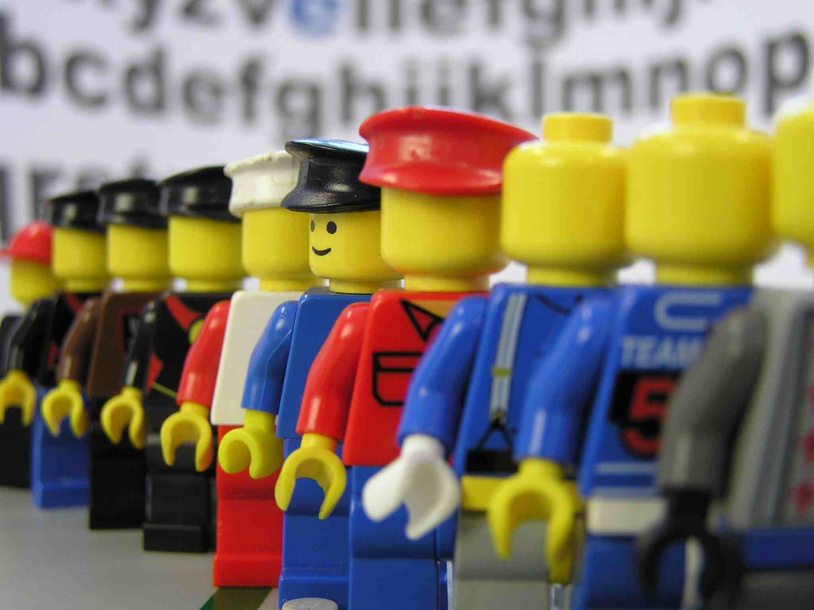

Most of the Toy review apps are for Parents. But in reality, it's kids who play with the toys!!! At least, most of the time ;) So, why don't I create an app for kids instead? And I did.
It's where kids can share what they like and dislike about the toys or games. Kids can make comments and give stars to the toys they like and give boogers for the toys they dislike. Kids can see other kids comments on toys and so do parents! So parents, check this out before you make your toy purchase on what kids really like.